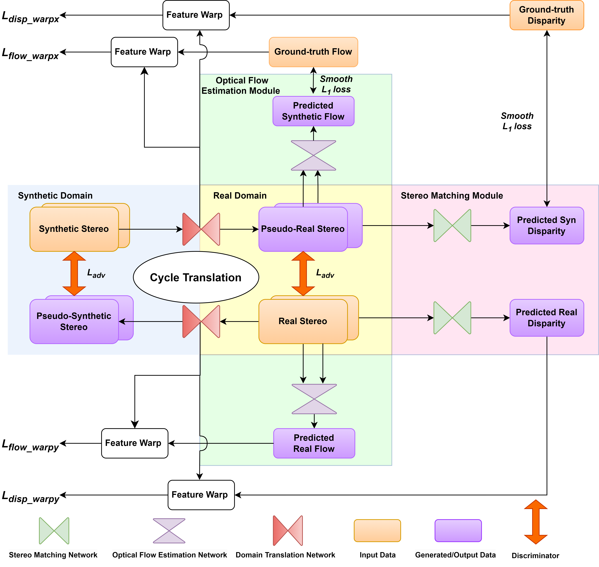

|
I am a second year Ph.D. candidate in Computer Science in Multimodal Vision Research Laboratory (MVRL) at Washington University in St. Louis, advised by Prof. Nathan Jacobs. Before that, I received my bachelor's degree in Electrical and Information Engineering from Tianjin University. I spent a wonderful year at Institute of Automation, Chinese Academy of Sciences(CASIA), working with Prof. Jinqiao Wang and Dr. Xu Zhao. I was a research intern at OPPO Research. Email / CV / Google Scholar / Linkedin / Github |
{kind=link}
|
My research lies broadly in computer vision and multi-modal learning. I am actively looking for internships in 2024 Summer. Feel free to contact me! |
|

|
Zhexiao Xiong, Feng Qiao, Yu Zhang, Nathan Jacobs, British Machine Vision Conference (BMVC), 2023 arXiv We introduce a novel training strategy for stereo matching and optical flow estima- tion that utilizes image-to-image translation between synthetic and real image domains. Our approach enables the training of models that excel in real image scenarios while relying solely on ground-truth information from synthetic images. To facilitate task- agnostic domain adaptation and the training of task-specific components, we introduce a bidirectional feature warping module that handles both left-right and forward-backward directions. Experimental results show competitive performance over previous domain translation-based methods, which substantiate the efficacy of our proposed framework, effectively leveraging the benefits of unsupervised domain adaptation, stereo matching, and optical flow estimation. |

|
Xin Xing, Zhexiao Xiong, Abby Stylianou, Srikumar Sastry, Liyu Gong , Nathan Jacobs arxiv, 2023 arXiv We propose a novel approach called Vision-Language Pseudo-Labeling (VLPL), which uses a visionlanguage model to suggest strong positive and negative pseudo-labels, and outperform the current SOTA methods by 5.5% on Pascal VOC, 18.4% on MS-COCO, 15.2% on NUS-WIDE, and 8.4% on CUB-Birds. |

|
Nanfei Jiang , Zhexiao Xiong, Hui Tian , Xu Zhao, Xiaojie Du , Chaoyang Zhao , Jinqiao Wang, Cognitive Computation and Systems We propose a network pruning pipeline,PruneFaceDet, to prune the lightweight face detection network, which performs training with L1 regularisation before CP. We compare two thresholding methods to get proper pruning thresholds in the CP stage. We apply the proposed pruning pipeline on the lightweight face detector and evaluate the performance on the WiderFace dataset, and get the result of a 56.3% decline of parameter size with almost no accuracy drop. |
|
Internships: CASIA (2021), OPPO (2022 Spring) |
|
Thank Jon Barron for sharing his website's source code. |